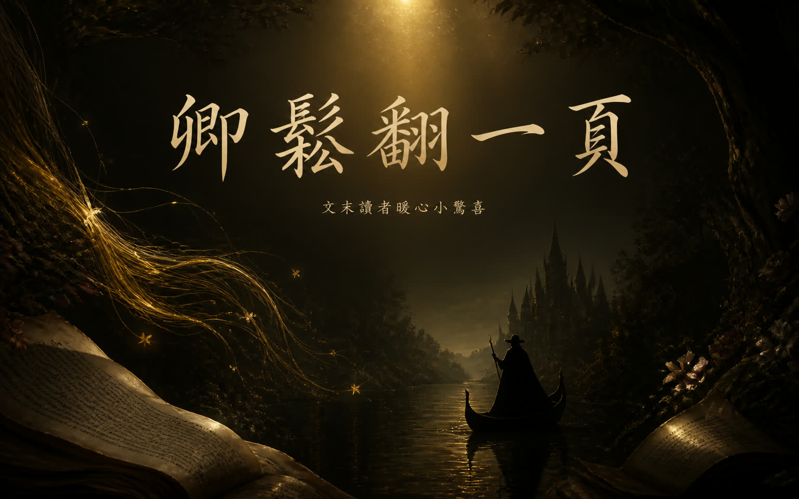
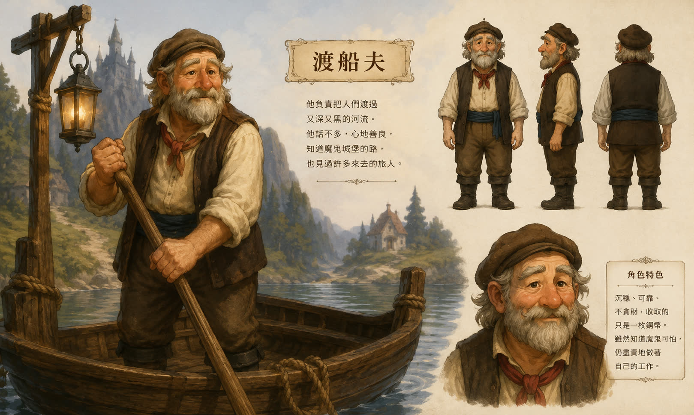
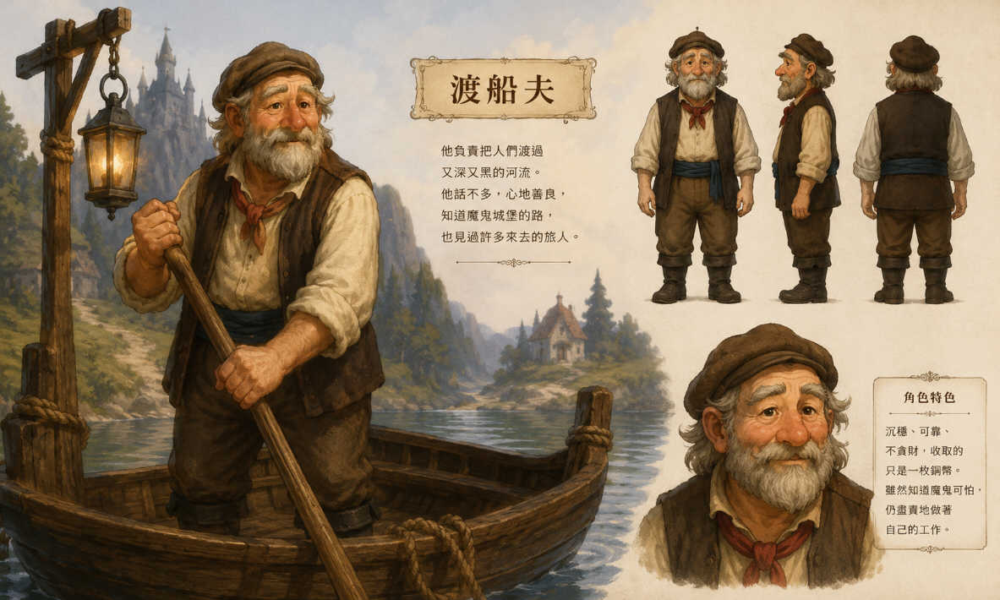

🖐 嗨嗨！我是卿鬆。不知道你是不是也跟我一樣，有一天發現這個世界再也無法讓你逃離吵雜的生活。
跟著我，找回生活的專注與平靜。在這個專屬空間裡，除了有精心挑選的書中精華，文末也為你準備了暖心的小驚喜！
講述一個出生注定要娶公主的窮小子，遭到國王百般刁難，甚至被要求拔下魔鬼頭上的三根金頭髮作為聘禮。最終，他成功帶回金頭髮娶了公主，而貪心的國王聽信他的話去尋找寶藏，反被留下來當永遠的渡船夫。
不知道你們有沒有聽過這個故事呢？

裡面的角色渡船夫應該讓我最有感吧！
「為什麼得撐船擺渡一輩子？」這個問題的答案如此簡單——「把篙子交給下一個人就可以了」🤲
不再需要討好每個人、萬人景仰、眾人期待。這麼做不是為了特異獨行，而是為了服侍——服侍來自「大我」的聲音。勇敢闖出自己的一片新天地吧！
其中最精采的故事結尾，居然是國王接下了渡船夫的工作。
代表的意義是：無法往前的舊思維。
在故事裡整整 14 年，國王對主角都是一樣的想法與刁難。
有人往前踏出，有人裹足不前 👟

正打這一篇文章的我，一個月前決定踏進未知領域接下這一份工作。說實話，我的頭腦現在就像一坨糨糊。但當初不放下手中的篙子，又怎麼知道會發生什麼事呢？
童話裡的心理學，真的太有意思。像是小時候看不懂的電影，長大卻越有感觸 🥺
每個人心中都有一座等待你橫渡的河流。
感謝您的今天的閱報，讀者禮「10元購物金」限量100份
輸入兌換碼「卿鬆放下篙」就可以兌換（發報後7天內有效）
卿鬆翻一頁，我們下頁見！